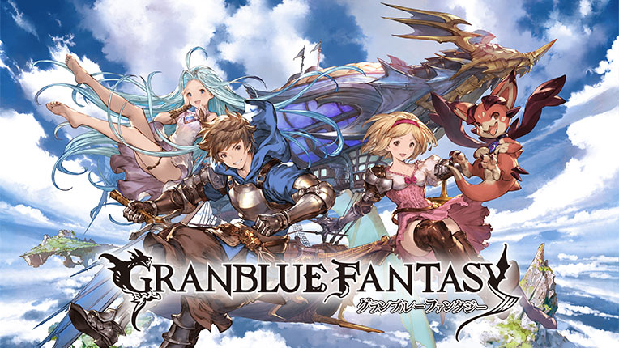
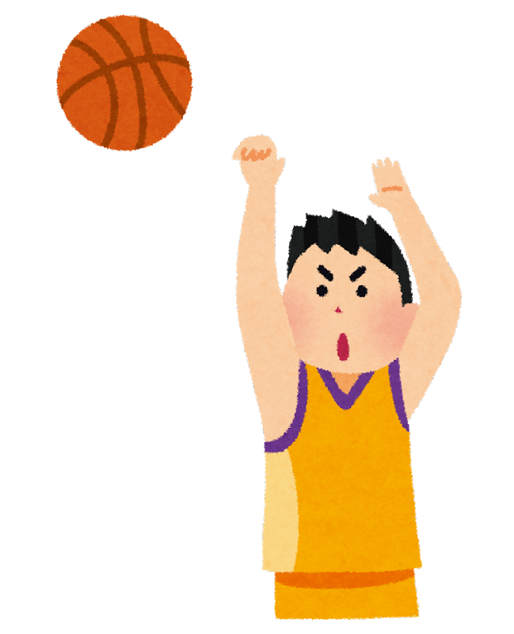

Naoki Nishikawa
System Integrator & Consultant
About Me
経歴
神奈川県の湘南エリア在住。
シンガポールに7年間住んでいました。
英語は話せませんが読んだり聞いたりはできます。
人事系BtoBアプリケーションを自社開発している会社に新卒で入社。
Javaによる開発業務を2年8ヶ月経験し、現在の会社に転職。
現在はSier兼コンサルティング業務に携わっています。
RUNTEQに入学した理由
ふたたびソースコードを書く仕事に就きたいと思い、
プログラミングを体系的に学び直そうと思って入学しました。
未経験ではありませんが、0から学び直すつもりで頑張っています。
UX/UIについて興味が湧いてきています。
Experience
開発業務
人事系BtoBアプリケーション開発。
メインで担当していたのは出張・経費申請機能、通勤交通費申請機能。
最後の半年間は上記に加え年末調整周りの機能開発も兼任（法改正対応）。
言語


年末調整機能ではCOBOLが必要だったので少しだけ触れました。
Hobby
ゲーム
一つのゲームをやり込むのが好きです。
Sports
小学校から大学卒業までバスケ部に所属していました。
大学時代には学生監督を務め、理工系リーグで優勝を経験しています。
